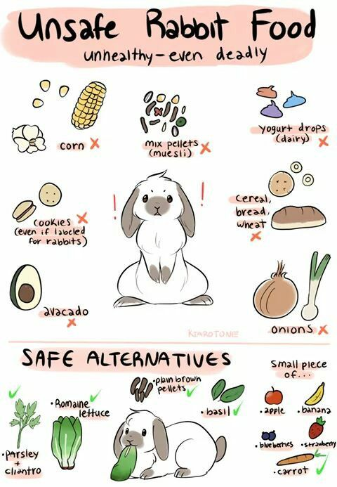

Know Their Habits
 Flopping: A bunny at ease will often flop in contentment.
Sometimes there’s a buildup to the flop as a bunny turns his/her head a few times before finally rolling over completely onto his/her side.
Growling: Grunting or growling is a sign your rabbit is angry or stressed. You may be invading their territory, and they’re telling you to back off.
Aggressive behavior will most likely ensue, so watch out.
Chinning: Chinning is a rabbit’s way of saying, “Mine!” They rub their chin, which has special scent glands, on objects to mark their territory.
Licking: Bunnies show affection by licking (grooming). You’ll often see pairs of rabbits grooming each other, which demonstrates they have a strong bond.
Chinning Nose Bonking / Nudging:
Rabbits explore their environment by sniffing and nudging. It may be a greeting or their first line of investigation.
Sometimes if the nudge is ignored, they follow up with a nip.
Flopping: A bunny at ease will often flop in contentment.
Sometimes there’s a buildup to the flop as a bunny turns his/her head a few times before finally rolling over completely onto his/her side.
Growling: Grunting or growling is a sign your rabbit is angry or stressed. You may be invading their territory, and they’re telling you to back off.
Aggressive behavior will most likely ensue, so watch out.
Chinning: Chinning is a rabbit’s way of saying, “Mine!” They rub their chin, which has special scent glands, on objects to mark their territory.
Licking: Bunnies show affection by licking (grooming). You’ll often see pairs of rabbits grooming each other, which demonstrates they have a strong bond.
Chinning Nose Bonking / Nudging:
Rabbits explore their environment by sniffing and nudging. It may be a greeting or their first line of investigation.
Sometimes if the nudge is ignored, they follow up with a nip.

Around 80% of a rabbit's diet should be grass or hay (dried grass). The rest is made up of a combination of fresh foods (e.g. vegetables and plants)
and commerical dry food (e.g. pellets/nuggets). Select the foods below to learn more about each.
 Does your bunny need help?
Find a nearby Pet Clinic
Does your bunny need help?
Find a nearby Pet Clinic
source from: http://www.therabbithouse.com/behaviour/rabbit-behaviour-problems.asp